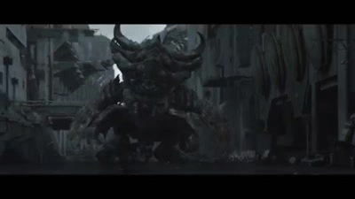
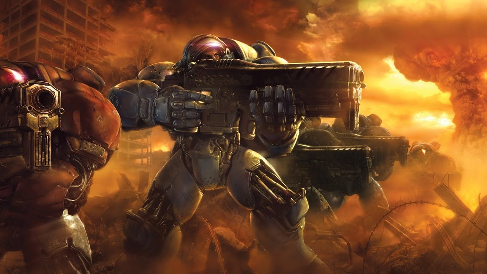
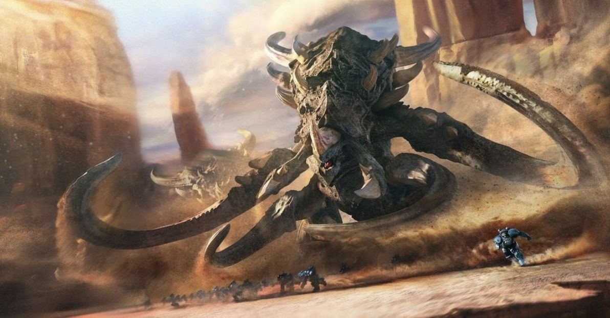
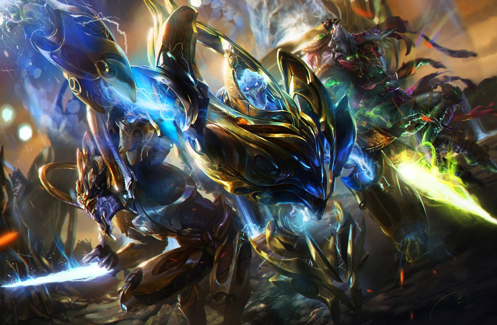

Наш сайт — это масштабная интерактивная энциклопедия, полностью посвященная легендарной вселенной StarCraft. Здесь вы найдёте исчерпывающую информацию по всем ключевым частям серии, включая классический StarCraft 1, культовое дополнение Brood War, грандиозную трилогию StarCraft 2 и самую свежую, новую часть франшизы. Подробные разделы подробно раскрывают историю, особенности и ключевые отличия трёх великих рас — могущественных Протоссов, стремительных Зергов и находчивых Терранов. Для любителей зрелищного контента на сайте собрана коллекция официальных трейлеров к Wings of Liberty, Heart of the Swarm, Legacy of the Void и новой игре, а также захватывающие видеоролики с демонстрацией битв между различными юнитами. Кроме того, посетителей ждёт интерактивный раздел легендарных героев StarCraft 2, где с помощью оригинальных переворачивающихся карточек можно ближе познакомиться со судьбами Сары Керриган, Зератула, Джима Рейнора и Тайкуса Финдли. Этот портал создан для того, чтобы стать главным проводником в мире Копрулу как для давних фанатов серии, так и для новых игроков.

Киберспорт

StarCraft I

StarCraft Brood War

StarCraft II

StarCraft

Трейлеры

Герои

Терраны

Зерги

Протоссы